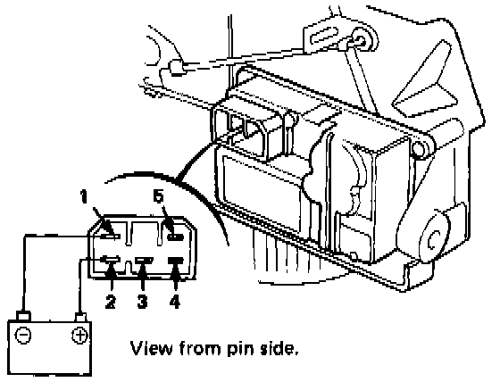

Sedan

Recirculation Control Motor Test
1. Connect the battery positive to No. 2 terminal of the recirculation control motor and negative to the No. 1 terminal.
- The motor should run.
2. With the battery still connected, connect the ohmmeter probes to the No. 5 and 4 terminals.
- The ohmmeter should continue to cycle back and forth but hesitate slightly longer when indicating continuity.
3. Then connect the ohmmeter to terminals No. 3 and 5.
- The ohmmeter should continue to cycle back and forth but hesitate slightly longer when indicating continuity.